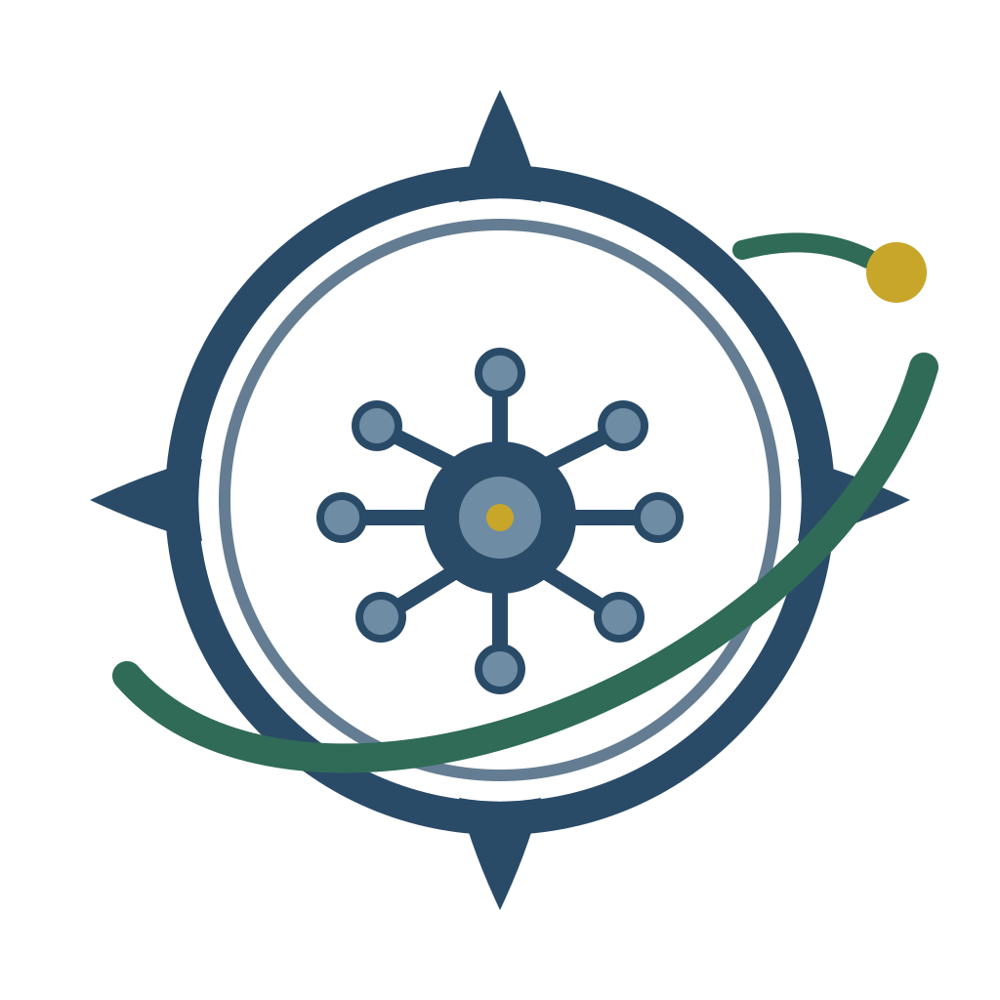

01
OPERACIÓN
Compás One
El sistema operativo del ecosistema. CRM, conversaciones, ventas, campañas, automatizaciones, proyectos, métricas e integraciones en un solo lugar.
Explorar Compás One →Conectamos tecnología, formación, creación, operación e inteligencia artificial para que personas, autores, instructores y empresas puedan construir, administrar y hacer crecer sus proyectos desde un mismo ecosistema.
Cada unidad de Compás resuelve una etapa distinta. Juntas crean una ruta completa: desde transformar una idea en un producto hasta administrarlo, enseñarlo, venderlo y automatizarlo.
El sistema operativo del ecosistema. CRM, conversaciones, ventas, campañas, automatizaciones, proyectos, métricas e integraciones en un solo lugar.
Explorar Compás One →Cursos, programas, certificaciones y recursos para desarrollar habilidades, profesionalizar proyectos y convertir conocimiento en acción.
Entrar a la Academia →El espacio para autores, escritores, instructores y expertos que quieren convertir experiencia, historias y metodologías en productos de conocimiento.
Ver soluciones para creadores →
04Agentes, asistentes y automatizaciones diseñados para atender, vender, apoyar, organizar y acompañar procesos sin perder el criterio humano.
Ver IA dentro del ecosistema →Compás One conecta los puntos del ecosistema. Un prospecto puede llegar desde una página, convertirse en alumno de una academia, comprar un producto, recibir seguimiento y ser atendido por un agente de IA sin salir del mismo sistema de operación.
Prospectos, clientes y oportunidades.
Conversaciones y atención centralizada.
Procesos que se ejecutan con reglas.
Agentes que apoyan ventas y servicio.
Seguimiento de entregables y operación.
Datos para tomar mejores decisiones.
El ecosistema combina formación, tecnología y ejecución. Cada proyecto puede entrar por una necesidad distinta y evolucionar hacia una solución más completa.
Diseño, estructura, accesos, cursos, alumnos, administración e integración tecnológica para crear academias profesionales.
ACADEMIA + ONEDe la experiencia del instructor a una ruta formativa con módulos, materiales, evaluaciones, recursos y publicación.
CREATORS + ACADEMIAEstructura editorial, acompañamiento, maquetación, publicación, recursos y gestión del proyecto del manuscrito al lanzamiento.
CREATORSSitios, landings, portales y experiencias digitales conectadas con la operación real del proyecto.
EVOLUTION + ONECRM, seguimiento, conversaciones, campañas, automatizaciones y datos para convertir atención en una operación ordenada.
ONEAgentes especializados para ventas, soporte, formación y procesos internos conectados a la información del negocio.
IA + ONENo necesitas contratar todo desde el primer día. Empezamos donde estás y conectamos nuevas capacidades conforme tu proyecto evoluciona.
Objetivo, audiencia, propuesta, necesidades y prioridades.
Curso, libro, academia, servicio, marca o experiencia digital.
Web, academia, CRM, formularios, conversaciones y datos.
Compás One organiza clientes, seguimiento, ventas y operación.
IA, automatizaciones, métricas, nuevas rutas y productos.
Compás Evolution no parte del tamaño de tu negocio. Parte de la claridad de tu objetivo y construye una infraestructura proporcional a la etapa en la que te encuentras.
Encontrar mi ruta →Creemos en usar tecnología e inteligencia artificial para ampliar capacidades, no para sustituir propósito, criterio ni identidad. Por eso el Compás siempre representa dirección y el punto amarillo representa el objetivo que mantiene el rumbo visible.
“Una dirección. Un ecosistema. Tu evolución.”
Podemos ayudarte a definir la ruta, construir la solución y conectarla con el ecosistema que tu proyecto realmente necesita.